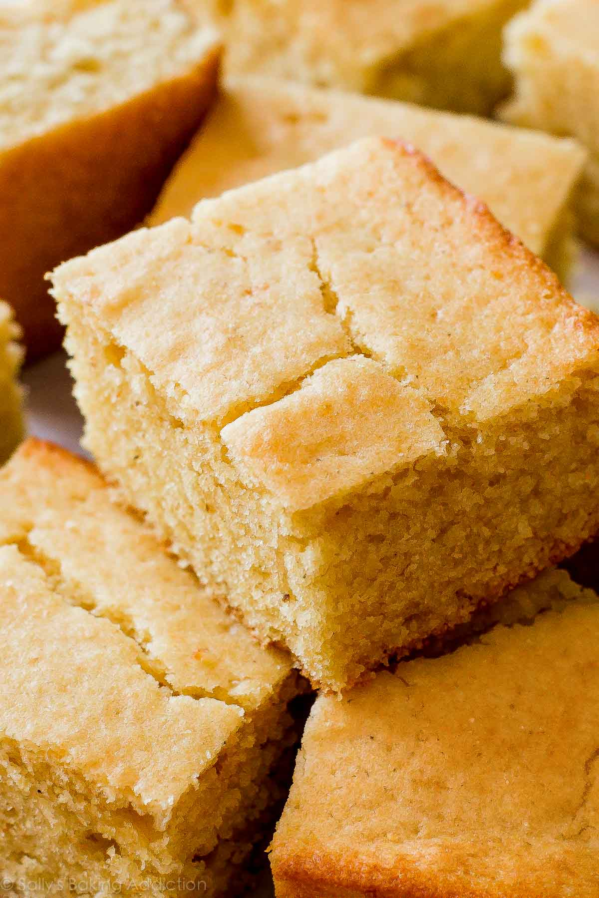

Cornbread

Description
A classic Southern staple side dish.
You can pair it with just about any Soul Food Main Course.
Ingredients
Fine Cornmeal: 1 cup
All-purpose Flour: 1 cup
Baking powder: 1 tsp
Baking soda: 1/2 tsp
Salt: 1/8 tsp
Unsalted Butter: 1/2 cup
Light or Dark Brown Sugar: 1/3 cup
Honey: 2 tbsp
1 Large Egg
Room Temperature Buttermilk: 1 cup
Steps
Melt the butter on low heat. Make sure not to burn it!
Brown Butter and Cornbread may sound good on paper, but it won't taste as good.
Preheat oven to 400°F (204°C).
Grease and lightly flour a 9-inch square baking pan. Set aside.
Next, whisk the cornmeal, flour, baking powder, baking soda, and salt together in a large bowl.
Mix until combined.
In a medium bowl, whisk the melted butter, brown sugar, and honey together until completely smooth and thick.
Whisk in the egg until combined.
Finally, whisk in the buttermilk.
Pour the wet ingredients into the dry ingredients and whisk until combined.
Avoid over-mixing.
Pour batter into prepared baking pan.
Bake for 20 minutes or until golden brown on top and the center is cooked through.
Allow the cornbread to cool before slicing.
Serve and enjoy!